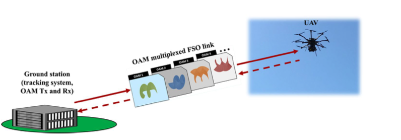

Neste artigo não irei explorar os detalhes da metodologia aplicada, assim como não irei explorar também detalhes de fabricação da maquina. O ponto que mais será explorado será os resultados.
Orbital-angular-momentum (OAM) é explorado neste artigo para aumentar a capacidade de transmissão em espaço livre entre um móvel - seja ele um drone ou um objeto similar - e uma estação base. Enquanto a demanda de comunicação em espaço livre foi aumentando com o passar dos anos a capacidade de estabelecer comunicações que provém uma largura de banda confiavel precisou acompanha-lá. Entretando uma capacidade alta de trasnmissão não suficiente para este tipo de comunicação. É necessario também que a capacidade de intereceptação desta comunicação seja extremamente limitada, visto que a maior parte das aplicações deste porte envolvem, por exemplo, drone militares. Um tipo de comunicação, chamada de Free-space-optical comuinications (FSO), vem ganhando os olhares nos ultimos anos dado que possui uma grande capacidade de transmissão, assim como um baixa chance de interceptação. Existem 2 tipos de modos que podem ser usados para operar FSO:
Optical spin-to-orbital angular momentum conversion in ultra-thin metasurfaces with arbitrary topological charges

Apesar do UAV possuir um sistema que tenta alinhar ao máximo os feixes de dados, não possuir um transmissor e possuir somente um refletor, o alinhamento permancece sendo um desafio. E ainda que os feixes estivessem perfeitamente alinhados, devido a defeitos na fabricação - o que é algo inerente ao sistema - ocorre que sempre há uma diferença de pelo menos 1arcsegundo. Isso leva a um offset entre feixes de 0.2mm. Como pode ser observado nas iamgens abaixo. Medições feitas durante o experimento mostram que o sistema é mais tolerante a falta de alinhamento vertical do que horizontal. Isso se deve ao fato da função de transferência possuir um valor dependente da direção horizontal.
Sob o ponto de vista da interceptação um alto alinhamento que gere um alto poder de recepção pode ser visto como algo positivo. Visto que para interceptar e realmente decodificar a mensagem um atacante deve obter o alinhamento exato para captura do feixe.
Indo para o resultado do experimento é notavel que a diferença na captura do feixe de luz entre os testes sob condições de solo, voando de forma parada e em movimento são bem diferentes. O error-bit-rate (EBR) tende a ser muito maior quando o UAV está voando em movimento. Mas isso prejudicará a transmissão? De certa forma, sim. O suficiente para que os modos sejam identificados de forma incorreta? Como é possivel verificar na imagem (e) acima, não. O modo desejado ainda é identificado como o correto. Dada a imagem (b) acima era também esperado que ter UAV planando no ar, parado, que o EBR possuiría um valor aceitavel. Entretando nao é o que acontece conforme vemos na imagem (a) abaixo. Por muitas vezes o erro supera o foward-error correction (FEC). Isso, segundo os autores, se da por tres motivos:
No fim os autores concluem que a comunicação entre uma estação base e um UAV é possivel. Entretando existem desafios.
This article is only a summary what is in this article provided by Nature.
- Space-division-multiplexing (SDM)
- Mode-division-multiplexing (MDM)
- Alinhamento Neste caso a falta de alinhamento entre trasnmissor e receptor acarreta em um aumento crosstalk ocorrendo intenferencia entre modos gerando uma perda de pacote.
- Turbulência No caso da turbulencia os resultados são parecidos com o alinhamento. Produzida pelas helices/turbinas a turbolência modifica a fase do feixe e isso tem como consequência uma variação na energia recebida pelo receptor que incorretamente decodifica o modo.
Optical spin-to-orbital angular momentum conversion in ultra-thin metasurfaces with arbitrary topological charges
Como funciona o OAM?
Cada modo do OAM possui tanto um sentido de rotação - podendo sem horário ou anti-horário - e um deslocamento de fase. Quantidade de hélices depende do numero atribuido ao l da imagem acima. Sendo positivo sua rotação se da pelo sentido horário, sendo negativo anti-horário. O objetivo do artigo é utilizar este modo em UAVs (Unmaned-aerial-vehicles) e verificar os parâmetros encontrados. As condições do experimentos são em espaço aberto e a uma distancia de 100m. Isso validando a trasnmissão com o UAV parado no ar e a uma velocidade de 0,1m/sExperimento

Apesar do UAV possuir um sistema que tenta alinhar ao máximo os feixes de dados, não possuir um transmissor e possuir somente um refletor, o alinhamento permancece sendo um desafio. E ainda que os feixes estivessem perfeitamente alinhados, devido a defeitos na fabricação - o que é algo inerente ao sistema - ocorre que sempre há uma diferença de pelo menos 1arcsegundo. Isso leva a um offset entre feixes de 0.2mm. Como pode ser observado nas iamgens abaixo. Medições feitas durante o experimento mostram que o sistema é mais tolerante a falta de alinhamento vertical do que horizontal. Isso se deve ao fato da função de transferência possuir um valor dependente da direção horizontal.
Sob o ponto de vista da interceptação um alto alinhamento que gere um alto poder de recepção pode ser visto como algo positivo. Visto que para interceptar e realmente decodificar a mensagem um atacante deve obter o alinhamento exato para captura do feixe.
Indo para o resultado do experimento é notavel que a diferença na captura do feixe de luz entre os testes sob condições de solo, voando de forma parada e em movimento são bem diferentes. O error-bit-rate (EBR) tende a ser muito maior quando o UAV está voando em movimento. Mas isso prejudicará a transmissão? De certa forma, sim. O suficiente para que os modos sejam identificados de forma incorreta? Como é possivel verificar na imagem (e) acima, não. O modo desejado ainda é identificado como o correto. Dada a imagem (b) acima era também esperado que ter UAV planando no ar, parado, que o EBR possuiría um valor aceitavel. Entretando nao é o que acontece conforme vemos na imagem (a) abaixo. Por muitas vezes o erro supera o foward-error correction (FEC). Isso, segundo os autores, se da por tres motivos:
- Ajustes momentaneos no sistema de trackeamento. Estes que pode ser melhorados para que pequenos ajustes não causem tantos erros de captura.
- Variação no pareamento do multiplexador OAM
- Crosstalk intermitente
No fim os autores concluem que a comunicação entre uma estação base e um UAV é possivel. Entretando existem desafios.
- Divergência O feixe de luz aplicado se dissipa proporcionalmente ao fator l. Quando maior for seu fator l, maior terá que ser o tamanho do receptor que capturará o feixe. Por exemplo, para o mesmo feixe de 20cm a uma distancia de 1km, um OAM +3 e um OAM +20 possuem diametros no receptor de ~20cm e ~47cm, respectivamente.
- Número de modos Se aumentando o número de modos é possivel eliminar o crosstalk. A interferencia seria muito menor. Porém, como visto no ponto acima, o desafio estará agora no receptor.
- Turbulencia Como já falado, além de causar pertubação no alinhamento entre transmissor e receptor, a turbulência também causa uma defasagem no angulo da hélice do feixe prejudicando a decodificação.
This article is only a summary what is in this article provided by Nature.